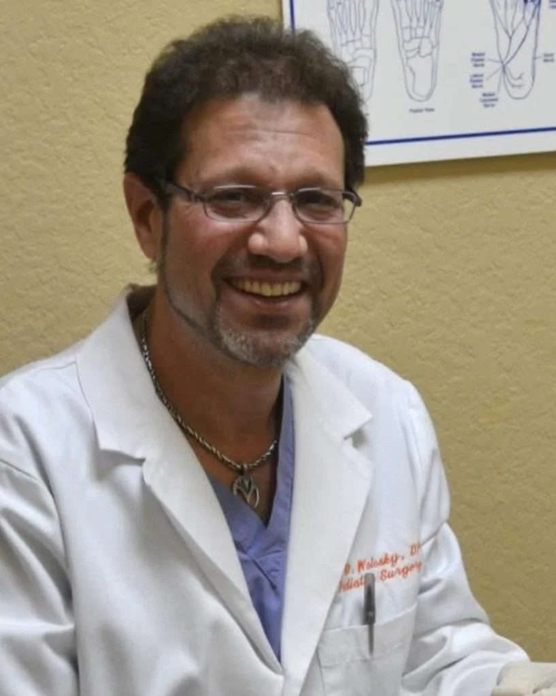

Dr. Bruce Wolosky, DPM
Founder · Foot & Ankle Physician & Surgeon
A University of Miami and Barry University graduate with more than 30 years in practice, Dr. Wolosky opened Podiatry Services of Florida in 1998 after surgical training in West Palm Beach. Patients describe him the same way again and again: honest, funny, and someone who truly listens.
- DPM, Barry University School of Podiatric Medicine
- Surgical residency, Wellington Regional (West Palm Beach)
- Serving the Ocala community since 1996